Helping people with complex chronic illness understand their bodies, and build days that work with them.
I'm a physical therapist and Program Manager at the Cohen Center for Recovery from Complex Chronic Illness (CoRE) at Mount Sinai, where I also offer health coaching. I also live with the conditions I work with every day.
Dysautonomia · Infection-associated chronic conditions · Hypermobility and connective tissue disorders
ATLASAutonomic Titration Load Adaptation System
I'm the author of ATLAS, Mount Sinai's Autonomic Rehabilitation Framework: a symptom-titrated, PEM-conscious approach to rehabilitation for dysautonomia and infection-associated chronic conditions. The first edition of the manual is now available free through CoRE.
Read the ATLAS ManualPresenting ATLAS to physical therapists at APTA Pennsylvania's MovePA Annual Conference.
Get MovePA tickets →CoRE and the education I build
Patient guides, provider education, and research at Mount Sinai.
See my work → Health CoachingWork with me through CoRE
What coaching is, what it isn't, and how to book.
Learn about coaching → About MeMeet Val
The person behind the work, and the diagnostic journey that shaped it.
Read my story →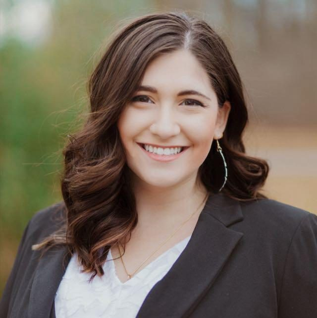
Dr. Valerie Iovine Rogers, PT, DPT, is a physical therapist and Program Manager at the Cohen Center for Recovery from Complex Chronic Illness (CoRE) at the Icahn School of Medicine at Mount Sinai. She is the author of ATLAS, Mount Sinai's Autonomic Rehabilitation Framework, and the founder of the Iovine Cluster. A nationally recognized educator in Ehlers-Danlos syndrome, dysautonomia, and infection-associated chronic illness, she has trained hundreds of physical therapists and lives with the conditions she treats.
At CoRE, Mount Sinai
CoRE is the world's first medical center dedicated to the research and treatment of infection-associated chronic conditions and illnesses.
I'm a Program Manager there. My work spans one-on-one health coaching, patient and provider education, research, and building new programs. Before Mount Sinai, I founded the EDS and POTS Clinical Specialty Program at Strive Physical Therapy, and today I train physical therapists across many PT companies, Strive included.
ATLAS Manual, First Edition
I'm the author of ATLAS (Autonomic Titration Load Adaptation System), the Icahn School of Medicine at Mount Sinai's Autonomic Rehabilitation Framework. It's a symptom-titrated, PEM-conscious approach to rehabilitation for dysautonomia and infection-associated chronic conditions, built as layered interventions that clinicians can apply step by step. I'm the sole author of the ATLAS Manual, published free by CoRE.
IACCI Provider Manual, Second Edition
Co-author of CoRE's clinical manual for infection-associated chronic conditions and illnesses, including Long COVID, ME/CFS, and chronic tick- and vector-borne illness.
The Iovine Cluster
I'm the founder of the Iovine Cluster, a clinical assessment for hypermobility developed as an alternative to the Beighton score. It's currently being prepared for peer-reviewed publication.
Patient-facing guide series
An ongoing project: plain-language guides on pacing, energy, and autonomic health, grounded in the CoRE IACCI Provider Manual. The Pacing and Autonomic Health series are complete, and new guides are always in development.
Modernizing how hypermobility is measured
I co-led one of the first clinical studies validating a joint arthrometer to quantify joint laxity in people with Ehlers-Danlos syndrome, showing it can work as a standardized tool in routine care. At CoRE, I contribute to research on autonomic dysfunction, hypermobility, and infection-associated chronic illness.
Gulick, D. T., Iovine, V., & Palombaro, K. (2024). Pilot study for use of an arthrometer to assess joint laxity in people with Ehlers-Danlos syndrome. Internet Journal of Allied Health Sciences and Practice, 22(2), Article 22. doi:10.46743/1540-580X/2024.2465
I have published under the name Valerie Iovine. Several manuscripts are currently in progress. Peer reviewer for Frontiers in Neurology.
Teaching the teams who treat this population
Through intramural and extramural education in connective tissue disorders and autonomic dysfunction, I've trained hundreds of physical therapists, both inside Mount Sinai and across outpatient PT companies. I also help train the Mount Sinai Health System's Trusted Rehabilitation Provider Network. Teams I've trained include Strive Physical Therapy, 3D Physical Therapy, Spear Physical Therapy, Kins Physical Therapy, The Lazarus Center, Cape Regional Medical Center, and CoRE at Mount Sinai. Some of my education sessions are available as videos on the CoRE website.
I've also lectured at Mount Sinai Grand Rounds for several departments, the Mount Sinai Center for Inherited Cardiovascular Diseases, Drexel University's DPT pathophysiology course, and the medical team at Bristol Township School District.
Office hours for PTs. I host weekly office hours on Mondays to mentor physical therapists through complex cases. If you'd like to join, email Valerie.Rogers@mountsinai.org for the time and link.
The Ehlers-Danlos Society and APTA
Content Strategist for The Ehlers-Danlos Society (2024 to present), session chair at the 2024 Global Learning Conference, and presenter for the Global Learning Conference and EDS ECHO series since 2023.
Member of the American Physical Therapy Association since 2018, including the Orthopedic, Research, and Cardiovascular & Pulmonary sections.
In the press
Featured by FOX 29, HuffPost, Newsweek, and Outside Magazine.
Guest on Osmosis's Raise the Line podcast, discussing connective tissue disorders in infection-associated chronic conditions and illnesses (IACCIs).
Guest on New York Women's CBT, in conversation with Kelsey Bates, LMHC: The Power of Multidisciplinary Care for Ehlers-Danlos, Dysautonomia and MCAS.
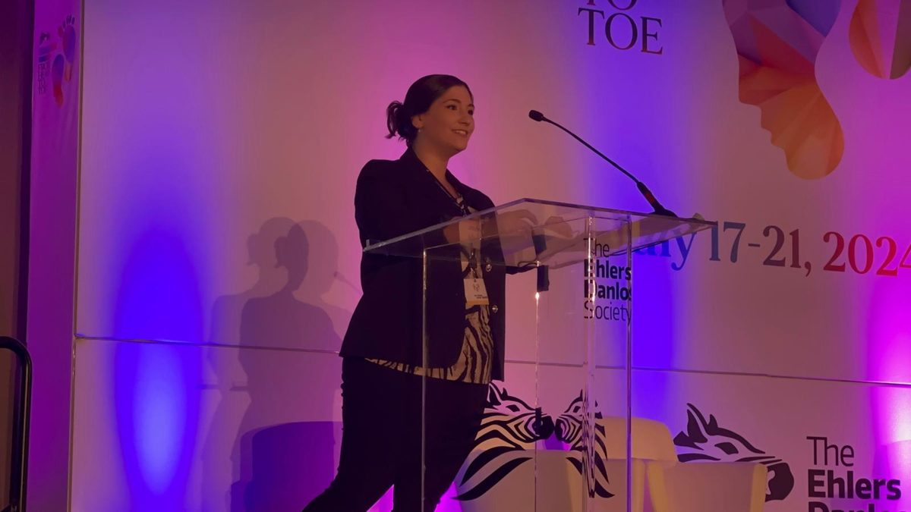
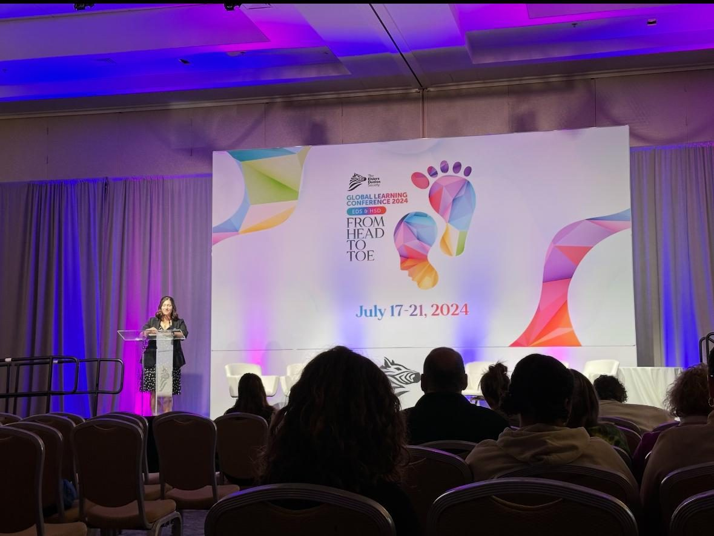
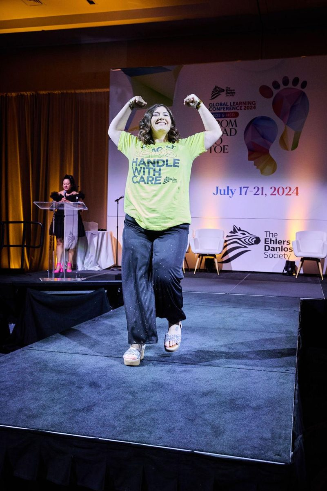
Presentations
I teach patients, clinicians, and care teams about complex chronic illness. For speaking engagements or education sessions, reach me at:
Valerie.Rogers@mountsinai.orgATLAS (Autonomic Titration Load Adaptation System): Symptom-Titrated, PEM-Conscious Rehabilitation for Dysautonomia and IACCIs
APTA Pennsylvania, MovePA Annual Conference · 2-hour session · Get ticketsThe Pacing Paradox
AHRQ Long COVID Care NetworkIs It Just Me, or Is This a Full-Time Job?
The Ehlers-Danlos Society 2025 SymposiumEncouraging Independence with Compassion: Balancing Care, Autonomy, and Safety in EDS/HSD
The Ehlers-Danlos Society ECHOHypermobility and Complex Chronic Illness: Clinical Pearls for Diagnosis and Management
Grand Rounds, Icahn School of Medicine at Mount Sinai · FellowsHypermobility and Complex Chronic Illness: Clinical Pearls for Diagnosis and Management
Grand Rounds, Icahn School of Medicine at Mount Sinai · Department of RheumatologyPrioritizing Mental Health: Resiliency & Seeking Support
The Ehlers-Danlos Society Global Learning Conference, Philadelphia · Rarer Types Day, Living with a Rarer Type of EDS: Coping and ResilienceFrom the Ground Up: The Importance of Foot Posture, Footwear, and Seemingly Unrelated Joints in EDS & HSD
The Ehlers-Danlos Society Global Learning Conference, Philadelphia · Knees, Ankles, Feet & MobilitySession Chair: Knees, Ankles, Feet & Mobility
The Ehlers-Danlos Society Global Learning Conference, PhiladelphiaLittle Leaders: Finding Our Voices and Learning About the Power of Self-Advocacy
The Ehlers-Danlos Society Global Learning Conference, Philadelphia · Kids programAdvocacy Avengers: Teens Transforming the Narrative of EDS and HSD
The Ehlers-Danlos Society Global Learning Conference, Philadelphia · Teens programPhysical Therapy Techniques for the Hypermobile Patient
The Ehlers-Danlos Society Global Learning Conference, Philadelphia · Musculoskeletal ManagementThriving and Flourishing with Chronic Pain
The Ehlers-Danlos Society Global Learning Conference, Philadelphia · Neurodivergence and Mental Wellbeing · with Dr. Sarah WengerMobility Aids: Enablers, Not Disablers
The Ehlers-Danlos Society Global Learning Conference, DublinCourse administrator
The Ehlers-Danlos Society ECHOCoaching through CoRE at Mount Sinai
Health coaching helps you understand what's happening in your body and turn your care plan into a daily life you can actually live.
Sessions are educational. We work alongside your medical team, not in place of it.
What coaching is
- Making sense of your diagnoses and how your symptoms connect
- Pacing and energy management that fits your real capacity
- Building routines around flares, sleep, stress, and recovery
- Translating your care plan into day-to-day steps
- Finding words to explain your condition to family, work, or school
- Preparing questions for your medical appointments
What coaching isn't
- Medical treatment or diagnosis
- Prescribing, changing, or recommending medications
- A replacement for your physicians or specialists
- Emergency or crisis care
Treatment decisions stay with your physicians. If you're in crisis, call or text 988, or call 911.
Email us
Send a short note saying you're interested in health coaching.
We follow up
The team will reply with next steps and availability.
Start sessions
We'll set goals together around what matters most to you right now.
MShealthcoaching@mountsinai.orgPlease don't include detailed medical information in your first email.
Dr. Valerie Iovine Rogers, PT, DPT
Dr. Valerie Iovine Rogers, PT, DPT, is a nationally recognized physical therapist, educator, and program manager specializing in complex chronic illnesses, with a particular focus on connective tissue disorders and autonomic dysfunction such as Ehlers-Danlos syndrome (EDS) and postural orthostatic tachycardia syndrome (POTS). She currently serves as a Program Manager at the Cohen Center for Recovery from Complex Chronic Illness (CoRE) at the Icahn School of Medicine at Mount Sinai, where she leads educational initiatives, develops clinical training for hypermobility and dysautonomia management, authored ATLAS, the Icahn School of Medicine at Mount Sinai's Autonomic Rehabilitation Framework, and its manual, founded the Iovine Cluster, co-authored the IACCI Provider Manual (2nd ed.), and contributes to ongoing research into underrecognized multisystemic conditions.
Dr. Rogers earned her Doctor of Physical Therapy and Bachelor of Science in Health Sciences through Drexel University's accelerated program, graduating magna cum laude (BS, 2019) and summa cum laude (DPT, 2021), with multiple leadership roles and honors. She later earned a Certificate in Wellness Counseling from Cornell University, graduating summa cum laude. Her academic journey has been marked by a deep commitment to patient advocacy, interprofessional collaboration, and the advancement of evidence-informed care models for underserved populations.
Before joining Mount Sinai, Dr. Rogers founded the EDS and POTS Clinical Specialty Program at Strive Physical Therapy. Under her leadership, the program grew rapidly to serve over 100 hypermobile patients annually, and she led a special interest group training physical therapists across the tri-state area to better understand and manage connective tissue disorders and autonomic dysfunction. Today she continues to train physical therapists across many PT companies.
Dr. Rogers has received numerous accolades for her work, including being named Strive Physical Therapy's Clinician of the Year and receiving the Outstanding Healthcare Provider of the Year award from the Ehlers-Danlos Society, an honor voted on by the patient community. She has presented nationally and internationally, including as an invited speaker at the Global Learning Conferences hosted by the Ehlers-Danlos Society in Dublin, Ireland (2023) and Philadelphia (2024).
Her research focuses on objectifying assessments of joint laxity in individuals with EDS, including collaborations with experts like Dr. Dawn Gulick. She has also contributed to the development of clinical pathways for POTS management within major healthcare systems, and leads research projects at the Icahn School of Medicine at Mount Sinai alongside Dr. David Putrino. A strong advocate for early recognition and interdisciplinary education, she has developed and delivered outreach programs for school nurses and other frontline healthcare providers to improve early identification of connective tissue disorders. She also founded and ran BendyBodyBlog, educating patients and providers on disability management from both the clinician and patient point of view.
Driven by empathy, precision, and a passion for innovation, Dr. Rogers continues to push the boundaries of rehabilitation science to ensure that patients with invisible illnesses are not only seen, but understood, supported, and empowered.
Doctor of Physical Therapy, Drexel University, 2021, summa cum laude
BS in Health Sciences, Drexel University, 2019, magna cum laude
Wellness Counseling Certificate, Cornell University
Outstanding Healthcare Provider of the Year, The Ehlers-Danlos Society, 2022
Clinician of the Year, Strive Physical Therapy, 2022
Dragon Service Award, Most Well-Rounded DPT Student, Drexel University, 2021
Capstone Honor for Hypermobility Curriculum Introduction, Drexel University, 2021
Founder, Physical Therapy Residency Fair, Drexel University and APTA, 2020
Student Life Impact Award, Drexel University, 2019
Cinnaminson Hall of Fame, 2015
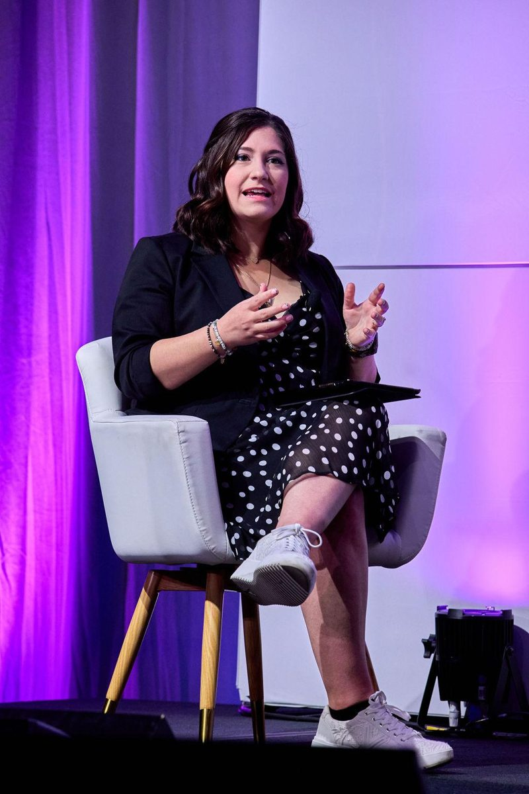
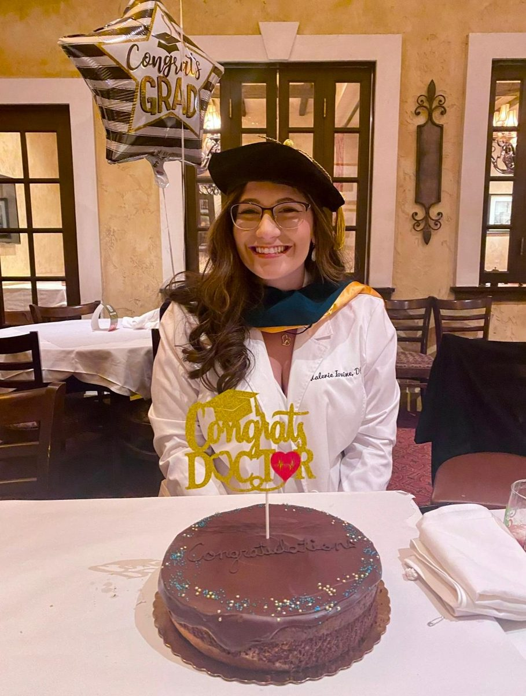
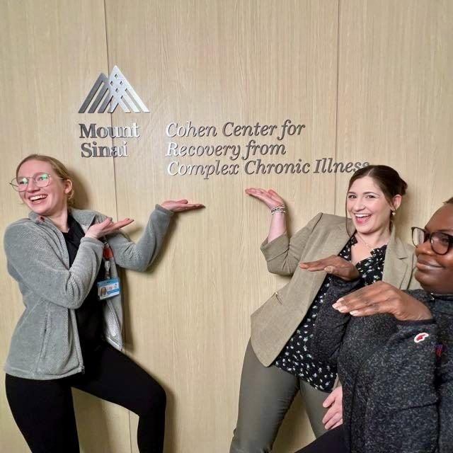
For speaking engagements and education sessions: Valerie.Rogers@mountsinai.org
Hi, I'm Dr. Val, and I turn lemons into lemonade.
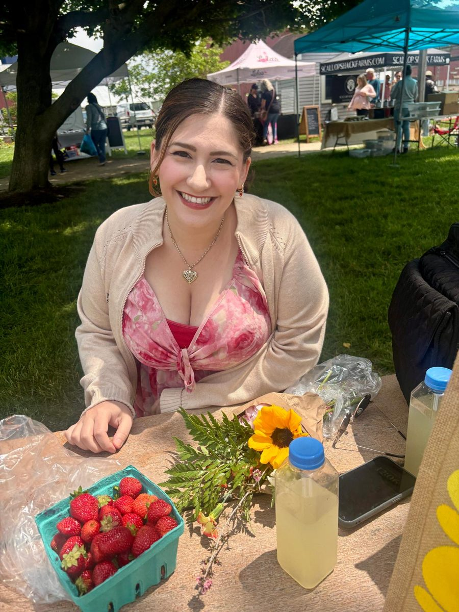
I'm a physical therapist, researcher, wellness counselor, and educator. But more than anything, I'm someone who truly gets what it's like to live in a body that doesn't always follow the rules.
My own journey with a connective tissue disorder, one with all the fun neurologic twists and curveballs, gave me more than a diagnosis. It gave me purpose. And it helped my family, too. I come from a big, loud, Philly family (my dad's the youngest of 10, so I'm the baby's baby!), and as I learned what was going on in my own body, I helped many of them connect the dots in theirs. That's when I realized how powerful knowledge can be, and how healing it is to not feel alone. I am so lucky to be so close with both sides of my family and be surrounded by such love and support. I'm a daughter, wife, sister, aunt, cousin, and friend, and my family are my best friends.
Now, I channel that knowledge into my work every day. I'm a Program Manager at Mount Sinai's Cohen Center for Recovery from Complex Chronic Illness. I train physical therapists to support this population and lead research focused on improving care for people with hypermobility, autonomic dysfunction, and related conditions.
I also hold a wellness counseling certification from Cornell, something I pursued during recovery when I wasn't sure if I'd ever be able to return to hands-on clinical work. Today I use it as a health coach at Mount Sinai, helping others learn how to help themselves.
While I love research, patient AND provider education, and protocol-building, I really just love talking to people. Helping someone feel understood, validated, and hopeful will always be my favorite part of the job.
I'm a South Jersey girl through and through, with deep Philly roots and a soft spot for salt air, especially in North Wildwood. I believe in the power of community, evidence-based care, and making things easier for the next person who comes along.
And yes, when life gives you lemons, you absolutely make lemonade. But sometimes you also need someone to show you how to squeeze the lemon first.
Thanks for being here. 💛
I love the color orange, I love sunsets and watching the moon rise. I love my cat. I rescued her first, but she rescues me pretty often. (I love all pets. So much.) I am a Phillies fan. I don't necessarily follow trends, yet love a good hype! Excited people are fun! When my body allows me, I love to cycle! I do this via Peloton at home a lot, or my orange tricycle down the shore. (Don't stop what you love doing, modify when your body is setting boundaries! Bike → Trike!)
I am addicted to chocolate. I think my sense of humor was built from the goofy randomness in iCarly, but now I love New Girl more than any other show. I am a Raven-puff, Ravenclaw/Hufflepuff combo, for any others that feel at home with the Wizarding World. I clear my mind by crafting. Some days that is crocheting, beading, painting. I just like getting lost in creativity. I listen to a lot of music, but Andy Grammer is how I keep positive, and Frank Sinatra can help calm me down too. I love the idea of nature but have an irrational fear of bugs, so balance, ya know?
Other hobbies besides crafting and seeing my friends and family include thrifting, reading, and audiobook-ing, and I know this sounds so nerdy but... I also love learning. I have won some pretty cool awards in this crazy career path I've taken, but I have to admit, the one that makes me happiest was in high school: Most Likely to Brighten Your Day. I hope that sentiment comes through in everything I do for as long as I live. :)
I am extremely passionate about what I do. It feels like a part of me. I have spoken at a number of conferences on various topics: some deep in the scientific weeds, some rehab focused, some mental health geared, and others on how to manage life living with chronic illness (and that's what I share about on Instagram, @drvalrogers). My role at Mount Sinai really takes a lot of what I was trying to do anyway, but allows me to spread education and awareness and bring light to innovative ideas.
I was told when I was younger that I "had an inside out brain." Things that were easy for others I would find a way to complicate, and things that seemed harder were what made more sense to me! I always came up with innovative backwards ways to do things. As a kid it was silly things like opening the banana at the other end to avoid the strings, but it's morphed into some cool, creative rehab techniques that have really helped people! I didn't know that not everyone's mind worked in pictures until I found myself in a growing group, helping my peers understand kinesiology in my doctorate program, and coming to this realization. It's things like that that make me appreciate my own uniqueness.
I also was lucky enough to attain my doctorate of physical therapy while already knowing I wanted to specialize in hypermobility, so I had the unique opportunity to learn everything and then question, "and what would happen if the connective tissue or nervous system was faulty?" My dad always told me, "If you love what you do, you never work a day in your life." So I am spending my days doing something I'd want to as a career, but would also choose to do even if it weren't a job. And if you can't tell from this About Me, I really struggle with keeping things short, and I am an open book. Use my experiences to help you with yours, please!!!
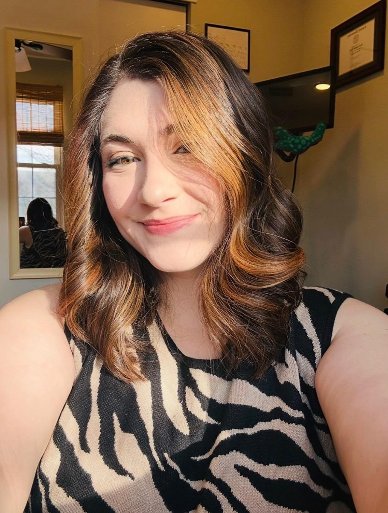
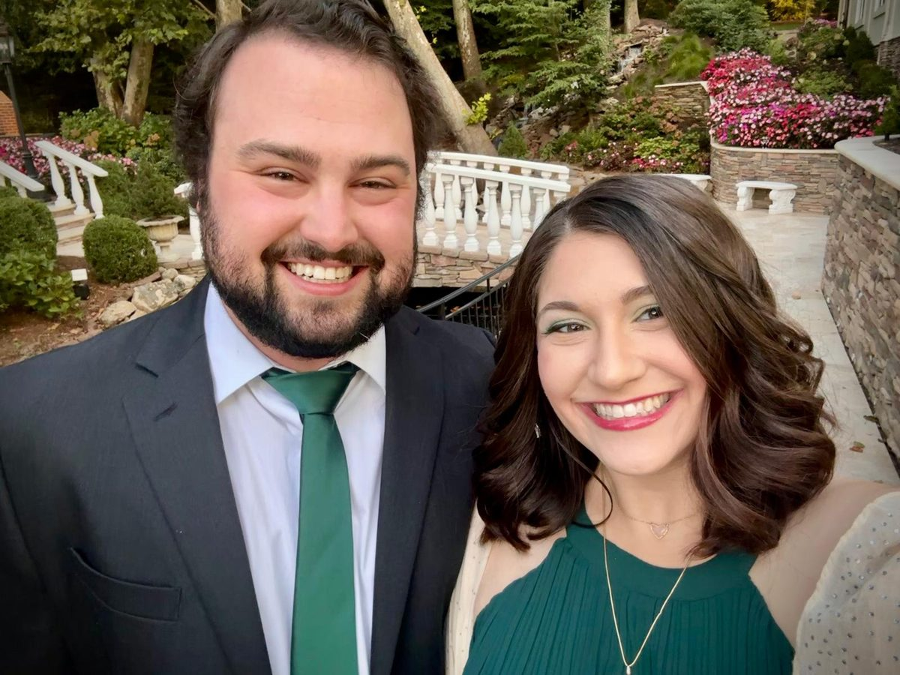
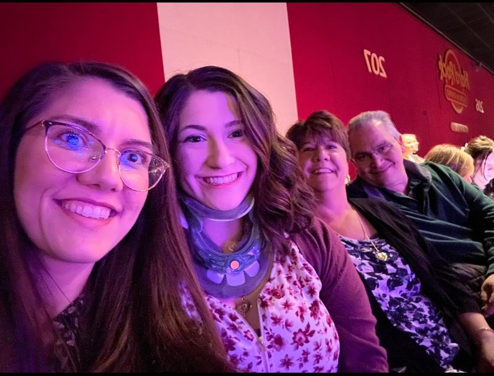
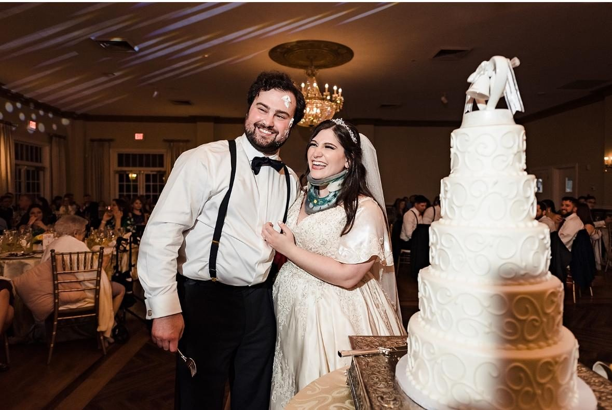
"That's too rare."
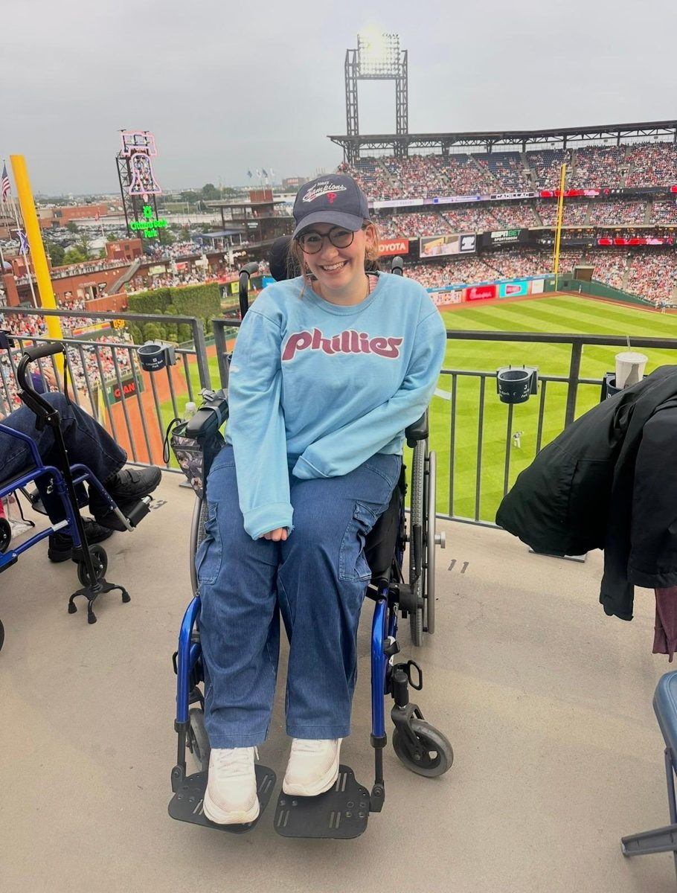
I was always a clumsy kid. Constant ankle sprains, fingers bending back weirdly, not holding a pencil right. Just little things I didn't know were signs of anything. My cousins and I had flexibility contests (plot twist: they have EDS too). Eventually, those "silly little things" became real problems.
In high school, I had my ankle reconstructed after a trampoline accident. A few years later, I needed the same surgery again. The surgeon, who had just been interviewed as one of the top doctors in the area, told me, "I've never seen this come undone before." I came to find out later, he actually noted hypermobility in my chart at that point, but I didn't know it yet!
Through college, I was constantly dealing with pain and dizziness. I chalked it up to stress or being "just sensitive." Then one day in a kinesiology lecture, my professor said, "Everything would work like this... unless you have Ehlers-Danlos Syndrome," and immediately brushed it off. But I sat straight up. I felt that.
I ran up to her after class: "That's me!! I think that's it! I think I have that thing you said, will you say it again for me please?!" And she told me, "Oh no, don't worry, that's too rare. You'd be in a wheelchair." I couldn't even spell it right for a while, but I kept trying to Google it now and then. It always stuck in my brain as maybe this is it... yet this is all I knew of it at the time, so I mostly dropped it.
Years later, in a pathophysiology class, we were asked to choose a rare disease to present on. I picked Ehlers-Danlos Syndrome, still considered rare at the time, and I devoured the literature. The 2017 diagnostic criteria had just been released. And I fit it.
So I found doctors who understood. I traveled to Mount Sinai. And I finally got my diagnosis.
I know I'm lucky. I have a big, supportive family and amazing friends who believed me. Since that day, the journey has only continued: unraveling the neurological pieces, the comorbidities, the daily challenges.
But I've come a long way. I've grown to acknowledge this for what it is: a disability. And saying that doesn't make me weaker. It makes me stronger. I don't let it define me, but I let it inform me. I use it as fuel to help others find answers faster than I did.
As years went on, I collected more diagnoses. Dysautonomia got more specific, and I was diagnosed with POTS after passing out early on in grad school. I was threatened to be a "burden to a clinical site," and told that if I didn't stabilize myself before clinical, I wouldn't be able to keep moving forward in my graduate studies. SO I did. I found my answers. I documented and trialed medications until I was stable enough to then trial my own upright titration protocol, and rehabilitated myself to a place where I was able to go to clinical as scheduled. Because I was late to commit, since my school had blackballed me a little, I landed an opening that had arisen late. Lo and behold, that opening was at Strive Physical Therapy, where I went on to found their EDS and POTS program and run the largest EDS Special Interest Group in the tristate area. Today I still train physical therapists there and at many other PT companies. Everything happens for a reason.
Next was my MCAS diagnosis.
Then the spinal instabilities, including CCI and AAI. Then Chiari. I had a fusion and Chiari decompression neurosurgery in June 2023. Then came the tethered cord. It's been quite the rollercoaster.
My recovery from my neurosurgery was going fantastically for a few months! I was beating all the milestones. But as the tethered cord worsened, I found myself back in a very hard stage. So I had that surgery too. Recovery wasn't easy, but I have more good days than I did before, and that's all I can ask for.
Some days I can walk without a mobility aid! Other days I use forearm crutches, and for something I really want to do but know will set me into quite a flare (usually because of the seats, actually), I bring my wheels!
Looking for my professional bio? Read it here →
MShealthcoaching@mountsinai.org
Valerie.Rogers@mountsinai.org
I founded and ran BendyBodyBlog, sharing life with chronic illness from both sides of the clinic. When I was no longer able to blog regularly, I moved to a professional page: @drvalrogers on Instagram and other socials. I post there occasionally.